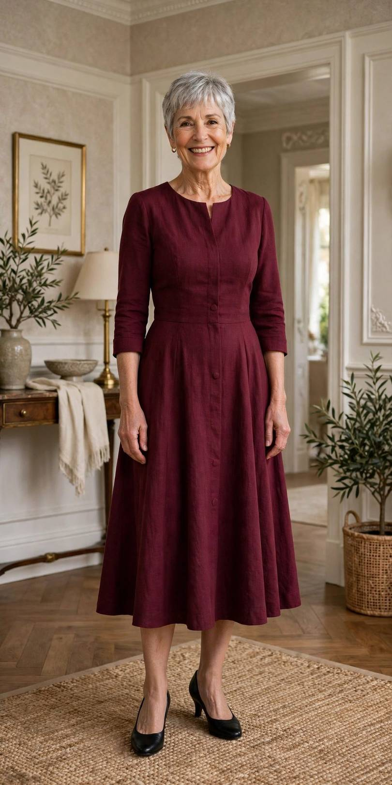
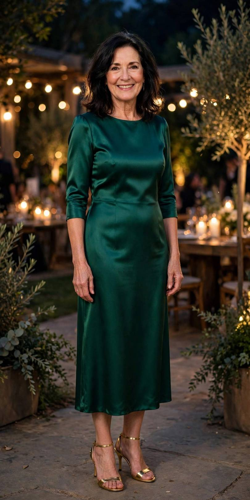
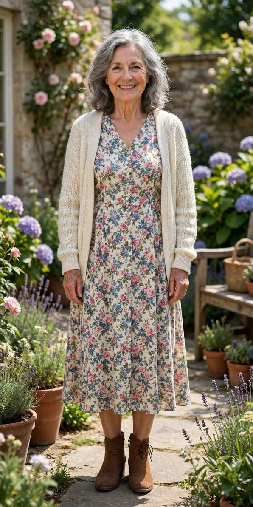
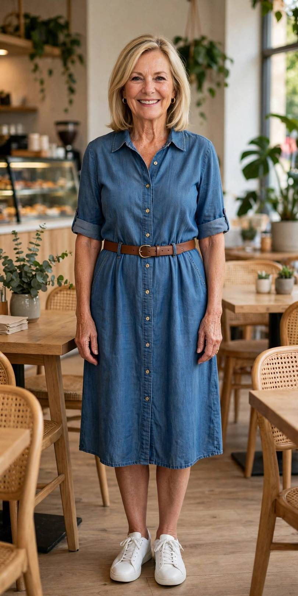
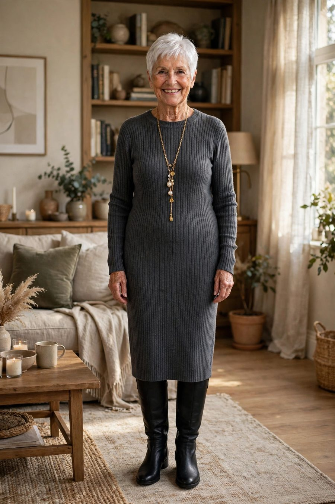
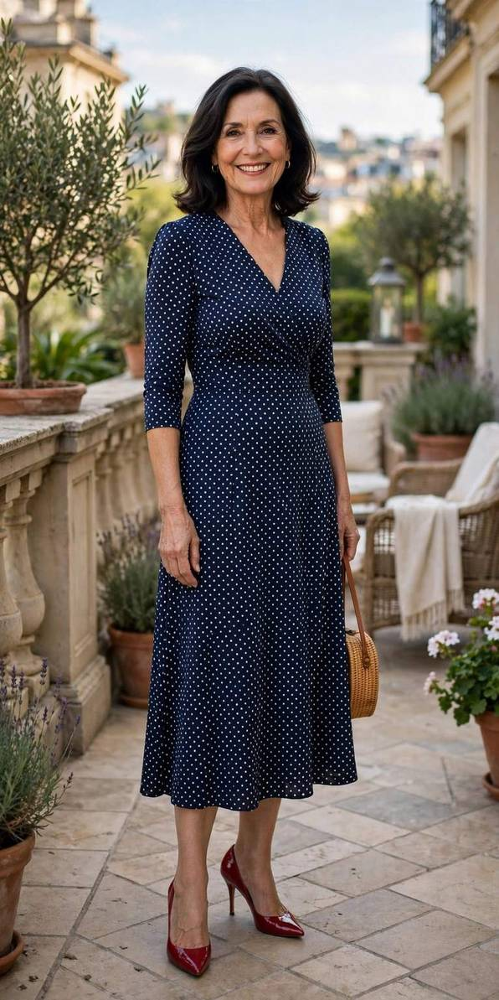
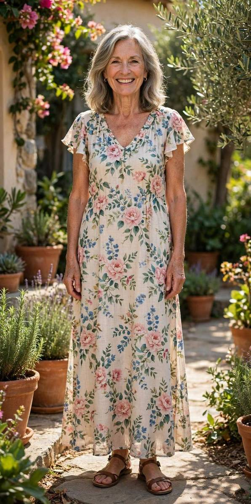
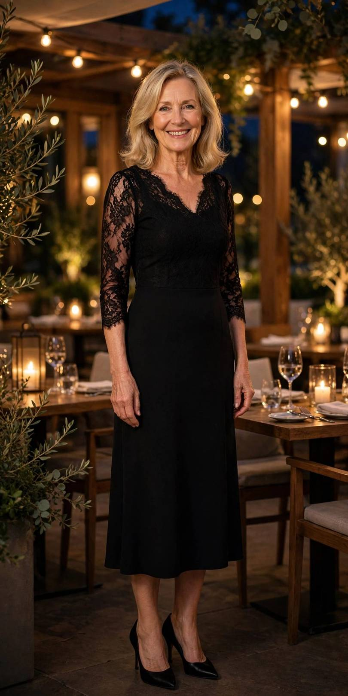
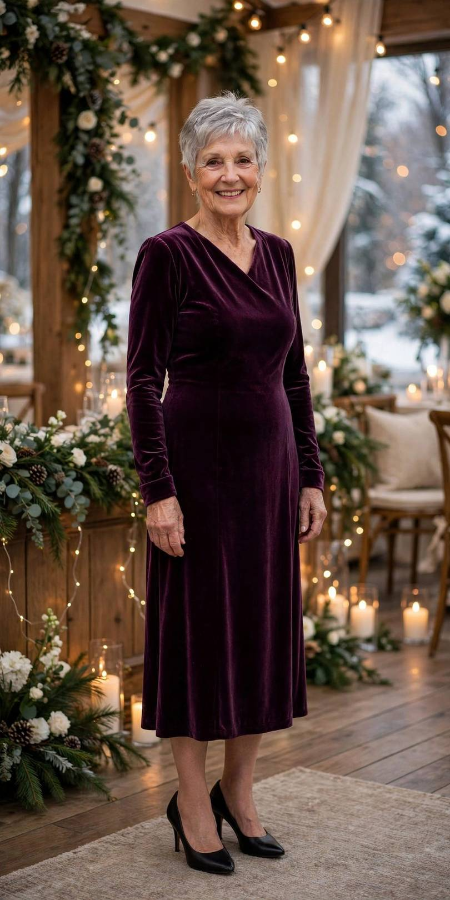

Dresses for Women Over 50: 12 Classy Styles With Sleeves That Flatter

Ask a room of women over 50 what they want from a dress and you will hear the same list: sleeves, a waist that does not punish lunch, and nothing that clings to the middle. Yet most dresses in the shops are sleeveless, bodycon, or cut like a sack. The 12 dresses for women over 50 below are chosen by the opposite rules — wrap fronts and A-lines that skim the tummy, sleeves on nearly every style (because that is what we actually search for), and lengths that end at the most elegant point of the leg.
There is a dress here for every occasion on a real calendar: wedding guest dresses, a winter wedding, church and family lunches, casual everyday dresses, and two evening styles that prove glamour has no age limit. Every one works at 50, 60 and beyond — change the shoe and the jewelry, and most of them work for three occasions each.
1. The Navy Wrap Dress (The Wedding Guest Answer)
When women search "what to wear over 50 to a wedding", this is the answer: a navy wrap midi dress. Navy is softer than black, photographs beautifully against wedding flowers, and works in every season. The wrap front ties at your narrowest point and drapes across the tummy, the elbow sleeves keep arms comfortable, and nude heels lengthen the leg without competing. If you buy one wedding guest dress this year, make it this one — it will serve every wedding, christening and anniversary party on your calendar.
2. Burgundy Fit-and-Flare With Sleeves

The fit-and-flare is the most forgiving silhouette ever designed: fitted where you are narrowest, flaring from the waist so the skirt never touches the tummy. In burgundy with three-quarter sleeves, it becomes the dress for autumn weddings, family dinners and every occasion that calls for "smart but not overdressed". The sleeve length matters — three-quarter shows the slim wrist and makes the whole arm look longer. Add black heels and simple gold jewelry and you are done.
3. Emerald Satin Midi Dress

For evening weddings and dressy parties, emerald satin is pure class. The colour flatters almost every skin tone and hair colour — especially silver hair, against which it looks stunning — and a bias or A-line cut in a fluid fabric moves over the body instead of mapping it. Look for a satin dress with a sleeve and a little drape at the front; matte or soft-sheen satin reads expensive, mirror-shiny satin shows every line. Gold heels and a small clutch finish the most glamorous dress on this list.
4. Floral Midi Dress + a Soft Cardigan

The floral midi is the dress women over 60 actually live in all spring and summer — for church, garden lunches and family gatherings. The formula that keeps it modern: a midi length, a defined waist (wrap or elastic-back), and a soft fine-knit cardigan over the top instead of a jacket. The cardigan adds the sleeve, softens the print, and creates two vertical lines that lengthen the body. Choose florals on a dark or mid-tone background for the most flattering effect, and keep the print scale medium — tiny ditzy prints can read frumpy, bold ones can overwhelm.
5. Black Dress With Sleeves + Boots
Every wardrobe needs one black dress with real sleeves, and winter is its season. A long-sleeve black midi worn with knee-high boots is an unbroken column of the most slimming colour there is — the tummy disappears, the boots close every cold gap, and a wrap or gently shaped waist keeps it feminine rather than severe. This is the dress for winter dinners, theatre nights and any evening when you want to look polished in five minutes. Change to heels and statement earrings and it goes formal instantly.
6. The Chambray Shirt Dress

The best casual dress for women over 50 is the shirt dress. Its buttons draw a long vertical line down the body, the collar frames the face, and a belt — worn at the high waist, never tight — gives shape while the skirt floats free. Chambray (soft denim-look cotton) is the friendliest version: it goes with white sneakers for everyday, ankle boots in autumn, and sandals all summer. Roll the sleeves to the elbow for the finished, deliberate look. If you work from home or live a casual life, buy two — this dress is a uniform in the best sense.
7. The Teal Wrap Dress
Teal is the colour stylists call "the universal flatterer" — it suits blondes, brunettes and silver hair equally, and it reads professional without being black. A teal wrap dress with three-quarter sleeves is the hardest-working dress in this list: office with heels, dinner with gold jewelry, weekend with ankle boots and a cardigan. The wrap front does its usual tummy magic, and the colour does the rest. If your wardrobe is all black and navy, this is the one colour dress to add first.
8. The Charcoal Sweater Dress

A sweater dress in a firm ribbed knit is winter's easiest one-piece outfit — provided the knit holds its own shape. Charcoal is softer than black and hides a multitude of sins; the ribbing should run vertically, and the fit should skim, never squeeze. Knee-high boots and a long pendant complete it. This is the dress for Christmas at home, Sunday lunches and every cold day when trousers feel like a chore. One warning: avoid thin, clingy sweater dresses entirely — the firm ribbed knit is the whole secret.
9. The Polka Dot Midi Dress

Polka dots are the print that never dates and never tries too hard. A navy dot midi with elbow sleeves has a gentle retro elegance that suits women over 50 beautifully — it is also a secret weapon for the tummy, because a regular print pattern breaks up the body's outline so the eye reads the pattern, not the shape. Red heels or a red bag add the classic finishing note. Wear it to weddings, lunches, the races, or anywhere you want to look like you have always known how to dress.
10. The Floral Maxi Dress

For holidays and summer gatherings, a flowing floral maxi is joy in dress form. The long unbroken line is deeply flattering, the floaty skirt asks nothing of your tummy, and short flutter sleeves give just enough arm coverage. The rules for wearing a maxi after 50: the waist must be defined (wrap, shirred or belted — never a straight sack), the length should skim the ankle rather than pool, and flat sandals keep it modern. This is the dress that gets compliments from strangers.
11. Black Lace-Sleeve Dress

The most elegant solution to the sleeve question ever invented: lace sleeves. A black midi dress with lace three-quarter sleeves gives full arm coverage that looks like pure luxury — the lace shows a hint of skin, so it reads evening rather than covered-up. This is the dress for anniversary dinners, formal parties and any night that matters. Keep jewelry simple (the lace is the decoration), wear your best heels, and let the dress do what it has done for elegant women for a hundred years.
12. Plum Velvet Dress (The Winter Wedding Dress)

Winter weddings call for a dress with warmth built in, and plum velvet with long sleeves is the answer. Velvet absorbs light instead of reflecting it off every curve, the deep plum is festive without competing with the season's reds, and long sleeves mean no shivering in a cold venue or hunting for a wrap. A crossover or wrap neckline keeps the front interesting and the tummy draped. This dress also returns for Christmas parties and New Year — cost per wear, it may be the best buy on the list.
Final Thoughts
The right dress after 50 is not about hiding — it is about engineering: a diagonal wrap line, a sleeve that ends at the wrist bone, a skirt that moves. Get those three things right and the dress does the flattering for you, at weddings, at work and at lunch with friends. Start with the navy wrap if you need a wedding guest dress, the shirt dress if you need an everyday one, and the lace-sleeve black dress if you want to feel magnificent. Then wear them on repeat — that is what they are for.
Next, read: Christmas Outfits for Women Over 50: 12 Classy, Tummy-Friendly Looks and How to Wear Cardigans Without Looking Frumpy Over 40. And if you have not yet, join the free email list on our homepage for the printable Tummy-Friendly Capsule Checklist.